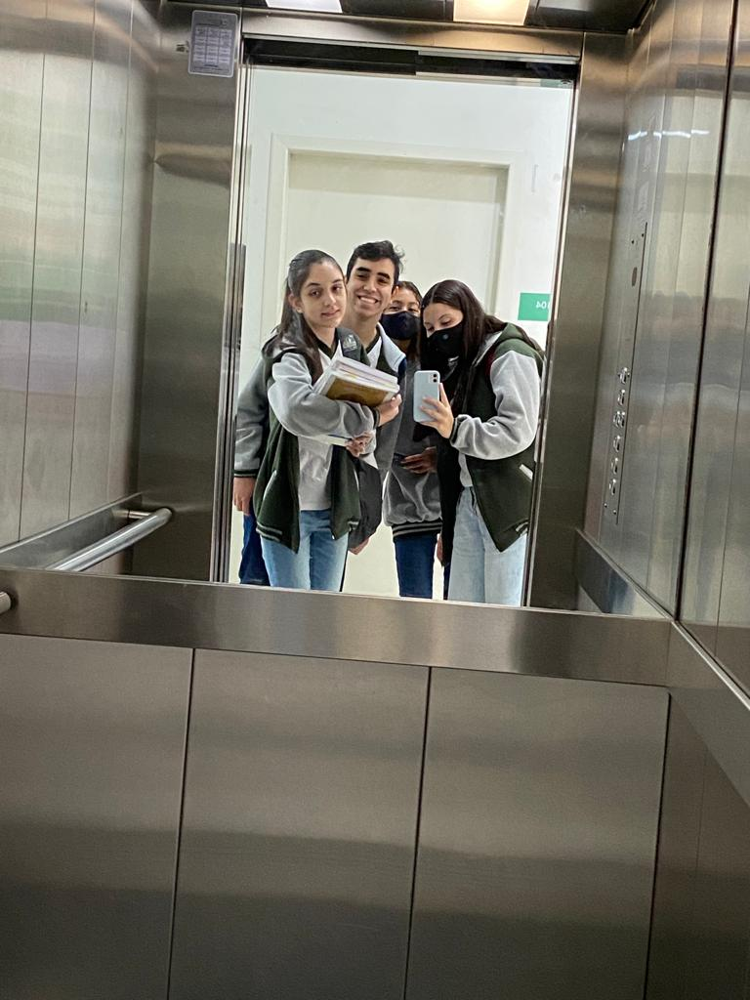

conheci a escola por meio do meu primo que estudou no IFSC de Joinville, falou da qualidade das escolas federais, e decide fazer a inscrição, por conta da pandemia não teria prova e seria por meio de sorteio, desanimei um pouco por não ser uma pessoa de muita sorte, despretensiosamente fiz a minha inscrição e pra minha surpresa consegui passar na primeira chamada (14°), cheguei aqui conhecendo somente duas pessoas, a minha namorada,Laíssa, e a Rafa que estudou comigo anos atrás, por sorte as duas ficaram na mesma sala que eu, até o momento estou gostando muito do curso que escolhi e estou tendo uma experiência acima das minhas expectativas.
